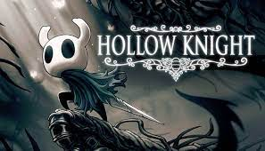
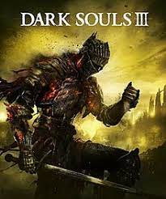
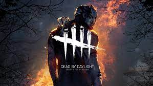

Hollow knight is one of my favorite games of all time. It has wonderfull platforming, combat, and worldbuilding. All of which make you feel like a part of the story.

Here is the trailer for the sequel to Hollow Knight, Hollow Knight SilkSong.
Dark souls 3
Dark Souls 3 is set in a gritty enviornment, that throws you directly into the game with little knowledge of where, or who you are. I love that kind of storytelling and it kept my interest for the duration of my playthrough.

Minecraft
Minecraft is a sandbox game that allows you to explore and build whatever you want whenever you want. This game structure makes it almost impossible to get bored.
Games I am currently playing
Apex legends
Apex legends is a multiplayer battle royal game that features many characters that allow for different playstyles. I usually play this game with a group of friends.
Dead by Daylight
Dead by Daylight is also a multiplayer game that I play with friends. It is a 1 vs. 4 game where you can either hunt down the team of 4 as a killer, or play in the group of 4 survivors and attempt escape.

Ender Lilies
Ender Lilies is a single player metroidvania similar to hollow knight. It is set in a region where a blight has infected the minds of the people living in it. Your character is tasked with ending the blight and saving the land.